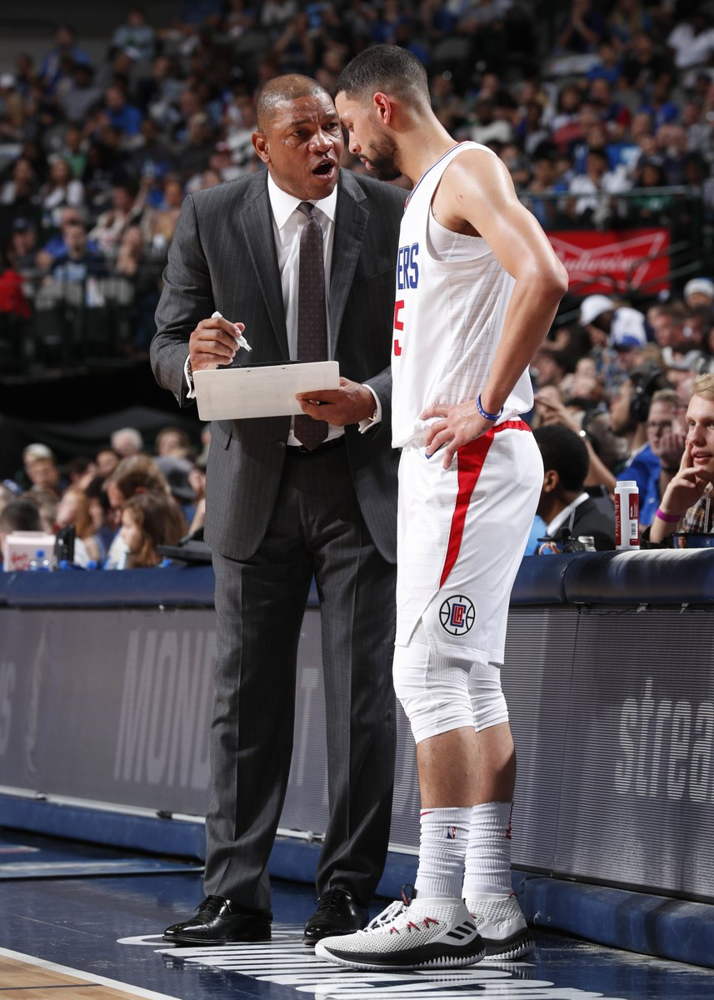

Home
Moments
Notifications
Messages
×
Some text in the Modal..
Tweet
Today
News
Sports
Entertainment
Fun
Create New Moment
The Simpsons may have 'predicted' this year's World Cup final World Cup 4 hours ago In the 1997 episode The Cartridge Family, Mexico and Portugal battled it out in a final "to determine which nation is the greatest on Earth." Now, some World Cup fans are wondering if this "prediction" will come…
A new trailer has dropped for The Predator

Body found in NFL star Janoris Jenkins' New Jersey home
Oklahoma becomes the 30th state to approve medical...
The Simpsons may have 'predicted' this year's World Cup final World Cup 4 hours ago In the 1997 episode The Cartridge Family, Mexico and Portugal battled it out in a final "to determine which nation is the greatest on Earth." Now, some World Cup fans are wondering if this "prediction" will come…
A new trailer has dropped for The Predator
Body found in NFL star Janoris Jenkins' New Jersey home
Oklahoma becomes the 30th state to approve medical...